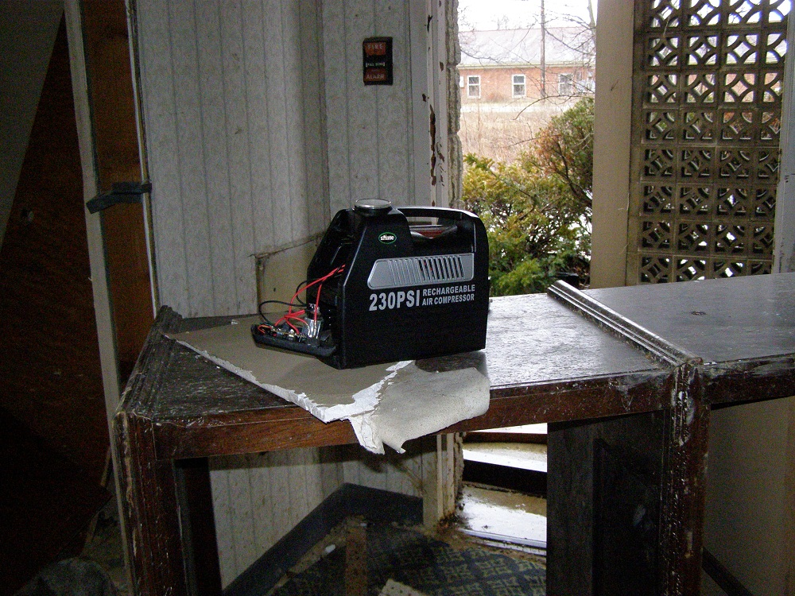
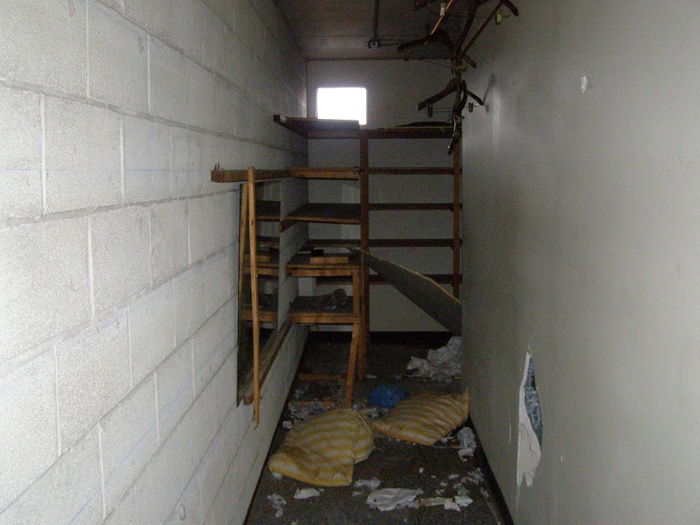
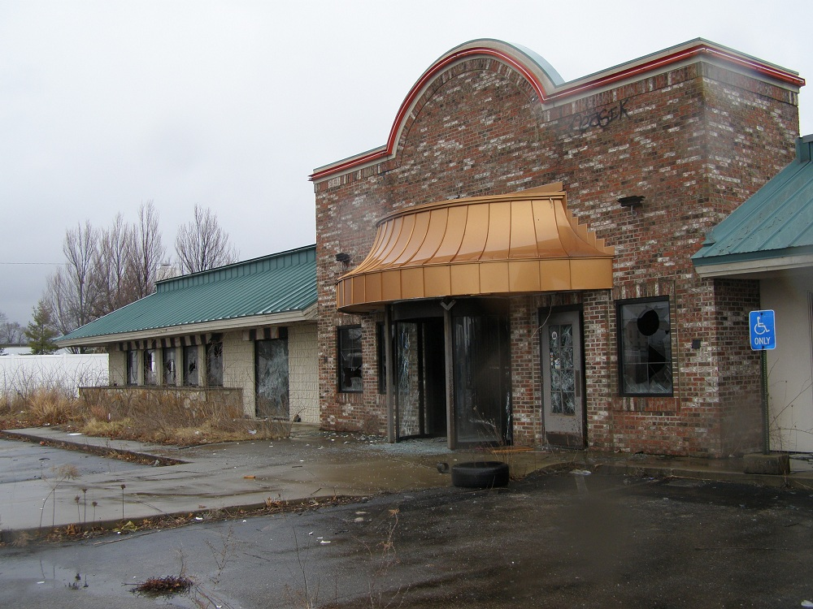
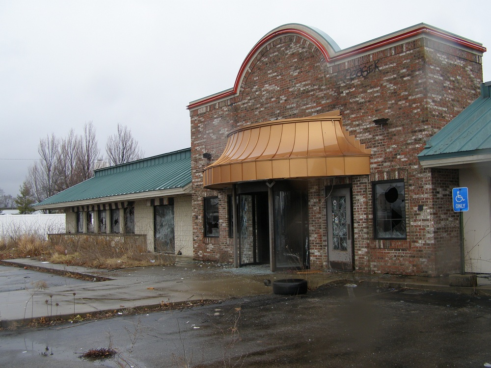

This Howard Johnson's hotel stood on South Hamilton Road on Columbus's east side for a couple of decades. The neighborhood changed around it, going from exurban to suburban to crappy urban, but its location--close to the city and a stone's throw from I-70--seems to have kept it running steadily until approximately 2010. I first saw it in mid-2012, then returned in February 2013 for a more thorough tour. By fall of 2013 the place had been knocked flat.
Once it closed down, it wasn't long before it fell victim to the decay that makes a place appear to have been abandoned for decades after just a few months. For one thing, there doesn't seem to have been much of an attempt to sell the hotel itself, so it wasn't cleaned up to impress anyone. All the furniture was pulled out, certain walls getting flattened and others busted out, various doors and decorations yanked down in the process.
Anything salvageable seems to have been extracted early while plenty of the leftovers never made it into a construction dumpster. Motel furniture and building materials are heaped everywhere in and around this vacant Howard Johnson's, including way out at the edge of the overgrown lot itself.

In addition to furniture and pieces of building material, the detritus spread across the property comprised a lot of fallen trees. As you can see, by 2013 the owners were methodically preparing for final demolition by having the full-grown trees cut down and chopped into manageable pieces.
My February 2013 exploration of the place turned out to be about six months before the buildings were flattened. I thought plans were underway to fix the building up, but I misinterpreted the evidence. An air compressor was left inside on a makeshift workbench, but that had to do with disassembling fixtures in a maintenance room; and a pair of hazmat specialists startled the hell out of me as they made their own rounds, surveying the interior for insulation issues. They were there to reduce environmental risks during demolition, not patch things up for any grand reopening. (The hazmat guys turned out to be very nice, incidentally, and were a pleasure to talk to, as surprising as it was to run into them.)


To keep people from easily reaching the upper floors they had knocked the metal risers off the old exterior staircases. One wing of guest rooms was three stories tall; I'm guessing the major concern was people being difficult to find and dislodge up there, because there is nothing safe at all about this cut-apart staircase.
With the windows gone, some huge sections of wall were missing as well. A glass-walled walkway between the front of the hotel and the rear (a corridor leading to the indoor pool) was left with little more than a floor and a roof.
But the most impressive sight on the grounds was definitely the center courtyard. As it was only open in one narrow place in the very back, you reached it by walking through the ruined hotel itself or under upper-story walkways like this one.
The most notable thing about the landscaped courtyard was definitely how overgrown it was. This startling overgrowth happens anytime a place is left unattended for more than a year or so; decorative hedges blow up and grass and weeds run riot, of course, but weirdest of all are the actual trees that take root. In a short length of time, wild trees will appear and grow to a significant height. It's an effect that confuses a lot of estimates about the age of an abandoned place.
Even in the winter the courtyard was a jungle of weeds and unchecked growth.
Buried in the skeletal riot of thorny bushes was a sizable wooden deck and the concrete channel of a decorative stream. It must have been a cool place to party when Howard Johnson's was up and running.
Now only the geese partied here, making their home in the seclusion of the half-flooded courtyard and trash-choked side and back lots. They honked irritably at us while we looked around, even getting fairly hostile when we approached to take these photographs. I hope they're somewhere safe now that their private HoJo is no more.
Continue by clicking below--either to explore the East Side HoJo's rooms and facilities, or the ruins of the attached bar and restaurant.
 . . . . . . . . . .

. . . . . . . . . .

Rooms and Facilities
. . . . . . . . . . . .
Bar and Restaurant
I first saw this gloriously torn-up place with my then-girlfriend not long before, in the fall of 2012. She and I parked out front and walked right in through a missing wall. We had poked around in no more than two ground-floor rooms when a police car pulled up right outside. The cop said, "They already called on you," and waved vaguely across the side street. (The only possibilities are a windowless warehouse and a gas station.) I said we'd just gotten there and that the place was pretty irresistable, and he said, "I'll give you that," and never even got out of the car. I don't suppose we looked like we were engaged in any tawdry illegal activity, but he certainly has my gratitude. Hamilton Road is not a nice area by even the lowest standards, and the half-demolished Howard Johnson's must have been an inviting target for squatters, prostitutes, and junkies seeking shelter. The carpet in places was littered with broken crack stems and glassine envelopes.

HoJo.com: Howard Johnson's Hotels
Back